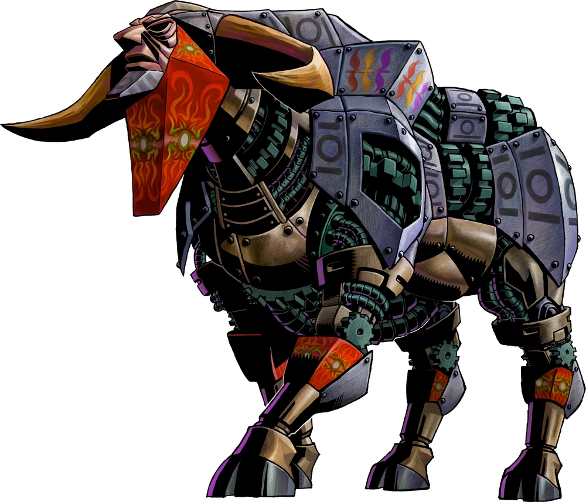

Rhork, Masque de la Chimère Mécanique
Rhork (仮面機械獣ゴート Kamen Kikai Jū Gōto) est le deuxième boss de Majora's Mask. Il apparaît au temple du pic des Neiges. Il est aussi le responsable de l'hiver long et froid qui pèse au pic des Neiges.
Rhork (仮面機械獣ゴート Kamen Kikai Jū Gōto) est le deuxième boss de Majora's Mask. Il apparaît au temple du pic des Neiges. Il est aussi le responsable de l'hiver long et froid qui pèse au pic des Neiges.